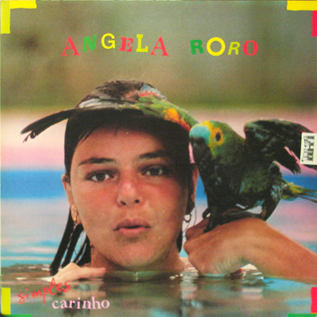

Biografia de Angela RoRo
Angela RoRo é uma cantora e compositora brasileira conhecida por sua voz marcante e letras intensas. Surgiu na música nos anos 1970 e se tornou referência na MPB.
Leia mais
Angela RoRo é uma cantora e compositora brasileira conhecida por sua voz marcante e letras intensas. Surgiu na música nos anos 1970 e se tornou referência na MPB.
Leia maisAo longo da carreira, Angela RoRo lançou diversos álbuns e músicas icônicas, abordando temas como amor, liberdade e emoções profundas.
Leia maisAngela RoRo é uma artista que sempre foi aberta sobre sua orientação sexual, sendo uma figura importante na representatividade LGBTQIA+ na música brasileira.
Leia mais